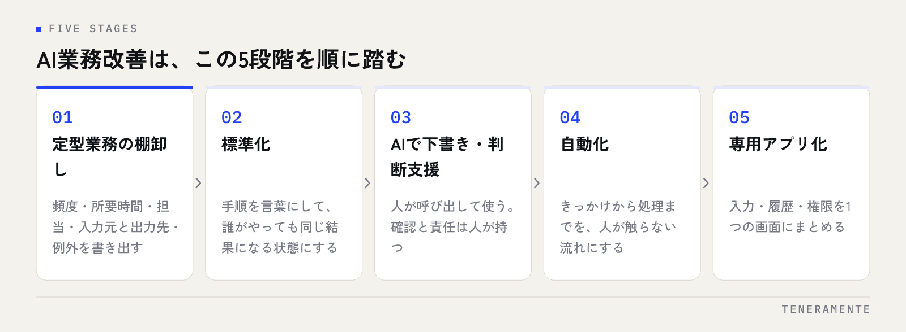

AI業務改善がうまく進まない会社の多くは、能力や予算ではなく「順番」でつまずいています。定型業務の棚卸し→標準化→AIで下書き・判断支援→自動化→専用アプリ化という5段階を順に踏むと、段階ごとに効果を確かめながら、無理なく進められます。この記事では、各段階でやること、次に進む判断基準、そして「ここでやめてよい」という線引きを整理します。
📌 この記事の結論
AI業務改善は、棚卸し→標準化→AIで下書き→自動化→アプリ化の順に進めると、戻らずに進められます。最初の2段階はAIを使わない地味な作業ですが、ここを飛ばした会社から順に止まっていきます。
01AI業務改善が止まる理由は「順番」にある
「ChatGPTを契約したが使われない」「自動化ツールを入れたが、例外対応で結局手作業」。こうした失敗の共通点は、棚卸しも標準化もしないまま、いきなり第3段階や第4段階から始めていることです。

AIは、手順が言葉になっている業務にしか安定して効きません。担当者の頭の中にしかない判断や、月ごとに変わる例外処理を、AIや自動化が勝手に埋めてくれることはないからです。最初の2段階（棚卸しと標準化）はAIを一切使わない地味な作業ですが、ここを飛ばすと後の段階がすべて崩れます。5段階は「早く進む」ためではなく、「戻らずに進む」ための順番です。
02第1段階：定型業務の棚卸し
まず、部門ごとに「毎日・毎週・毎月、同じ形で繰り返している作業」を書き出します。ポイントは、業務名ではなく作業の単位で書くことです。「請求業務」ではなく、「販売管理から金額を転記する」「請求書PDFを作る」「メールに添付して送る」「入金を照合する」と分けます。
各作業について、次の4点を記録します。
- 頻度と、1回あたりの所要時間
- 誰がやっているか（その人しかできないか）
- 入力元と出力先（Excel、メール、紙、チャットなど）
- 例外が起きる頻度と、そのときの対応
この一覧が、以降すべての段階の土台になります。所要時間が長い順、属人化している順に並べ替えると、着手すべき業務が自然に浮かびます。
03第2段階：標準化——手順を言葉にする
棚卸しで選んだ業務を、他の人が読めば同じ結果になる手順書に落とします。判断基準は「新人がこの手順書だけで作業を完了できるか」です。
標準化の過程で、判断が必要な箇所と、機械的にできる箇所が分かれます。「金額が一定以上なら上長確認」のように条件が書けるなら機械的。「相手との関係性で表現を変える」は判断です。この分離が、次の段階でAIに任せる範囲を決めます。
やめどきもここにあります。手順を書いてみて例外が半分以上を占める業務は、AI化・自動化の対象から外し、人の担当で続ける方が安全です。Excelで回している業務の限界とシステム化の見極めは、Excel管理の限界はどこ？システム化すべき5つのサインも参考になります。
04第3段階：AIで下書き・判断支援
ここで初めて生成AIの出番です。標準化した手順のうち「言葉を扱う工程」をAIに渡します。メールや報告書の下書き、問い合わせの分類、書類の要点整理、チェック観点の洗い出しなど。人は、AIの出力を確認し、判断が必要な箇所を決める役に回ります。
この段階で必ずやることが2つあります。ひとつは、うまくいったプロンプト（AIへの指示文）を手順書に書き足し、個人の技にしないこと。もうひとつは、入力してよい情報の線引きを利用ルールとして決めることです。どの業務から使い始めるかは、業務改善にAIをどう使う？中小企業がまず手をつける業務の見つけ方で部門別に解説しています。
次へ進む基準は「同じプロンプトを毎日のように使っている」「AIの出力をほぼ直さずに使えている」の2つがそろったときです。
05第4段階：自動化——人が触らない流れをつくる
第3段階では人がAIを呼び出していました。第4段階では、きっかけ（メール受信、フォーム送信、日時など）から出力の保存や通知までを、人が触らずに流します。問い合わせメールを分類して担当者に振り分ける、日次の報告をまとめてチャットに投稿する、といった流れです。
自動化で最も重要なのは、止まったときに気づける仕組みです。エラー通知、処理ログ、失敗時に手動で対応する手順を最初から用意します。自動化した瞬間に「見えない業務」になり、壊れても誰も気づかないのが典型的な失敗です。
やめどきは、例外対応の手間が、自動化で浮いた時間を上回ったとき。このときは第3段階に戻し、人がAIを使う形で運用する方が総コストは下がります。
06第5段階：専用アプリ化
自動化した流れが複数の部門にまたがる、複数人が同時にデータを触る、進捗を一覧で見たい、権限ごとに見せる範囲を変えたい。こうなると、個別の自動化をつなぎ合わせるより、御社の業務に合わせた専用のアプリに置き換える方が、運用も改修も軽くなります。
アプリ化の判断基準は3つです。毎日さわる業務であること、複数人が関わること、そしてExcelやチャットの限界（同時編集、転記ミス、属人化）が実際に起きていること。1つも当てはまらないなら、第4段階までで十分です。
アプリ化に進むときも、いきなり全機能を作らず、小さなPoC（Proof of Concept：試作）で1つの業務だけを動かし、現場が使えるかを確かめてから範囲を広げます。開発を外部に頼む場合は、ミーティングの回数と、初期費用・月額のそれぞれに何が含まれるかを最初に確認しておくと、判断がぶれません。アプリ開発の全体像はAI業務改善アプリ開発 完全ガイドにまとめています。
07各段階の「進む基準」と「やめどき」一覧
| 段階 | やること | 次へ進む基準 | やめどき・戻る判断 |
|---|---|---|---|
| 1 棚卸し | 作業単位で一覧化 | 時間・属人化の順に並んだ | — |
| 2 標準化 | 手順書に落とす | 新人が手順書だけで完了できる | 例外が半分以上なら対象外 |
| 3 AI下書き | 言葉の工程をAIへ | 同じ指示を毎日使い、ほぼ直さない | ルール未整備なら止める |
| 4 自動化 | 人が触らない流れ | 止まったら気づける | 例外対応が浮いた時間を上回る |
| 5 アプリ化 | 専用ツールへ | 複数人・毎日・限界が現実に | 1人・不定期なら不要 |
段階を飛ばさず、各段階で「進む」「とどまる」「戻る」を判断する。これが、AI業務改善を途中で止めないための、いちばん確実な進め方です。
TENERAMENTEは、要件整理から設計・実装・運用までを分業せず内製で行う名古屋のAI開発企業です。第5段階のAI×WEBアプリ開発は初期費用30万円〜、要件整理・仕様確認・最終確認の3回のミーティングで進め、小さなPoCなら最短2週間で触れる形になります。第1段階の棚卸しから第5段階のアプリ化まで、いま御社がどの段階にいるかを見立てるところからで構いません。お問い合わせからご相談ください。